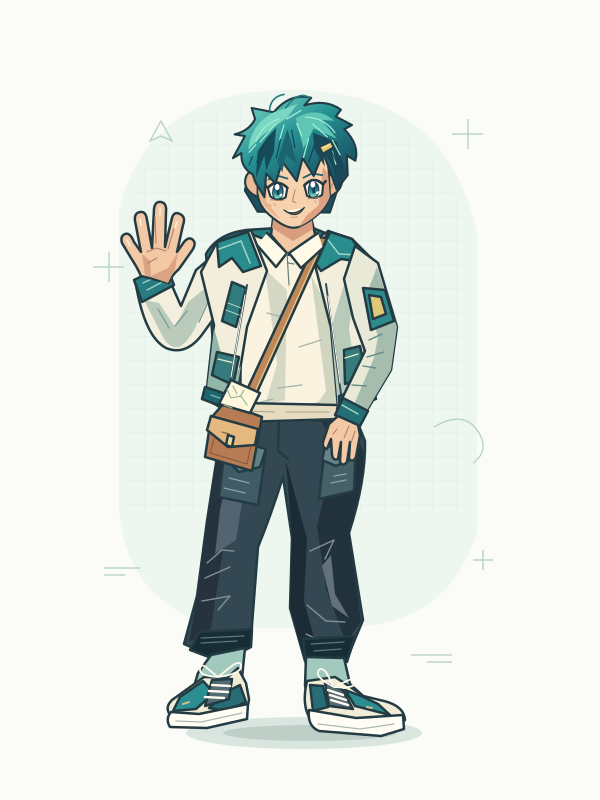
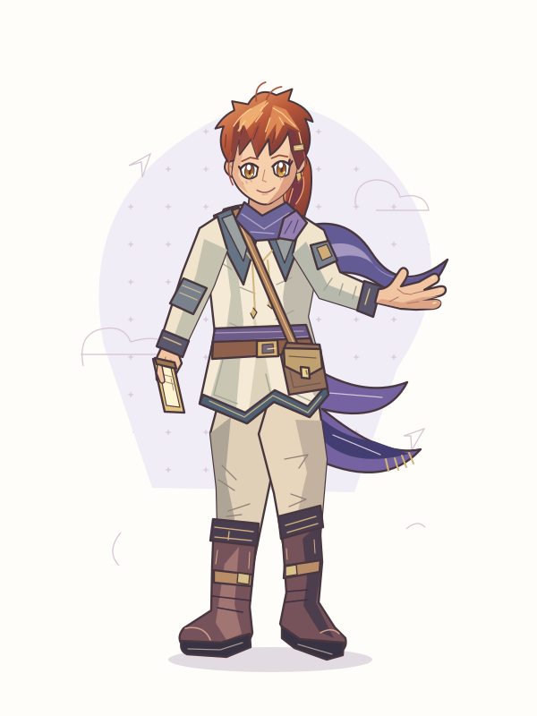
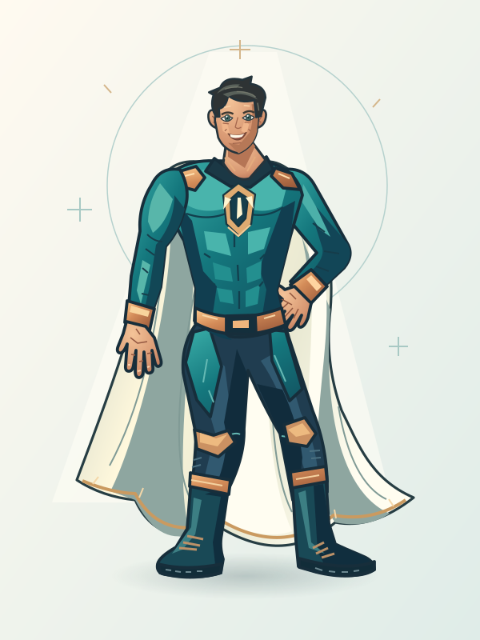
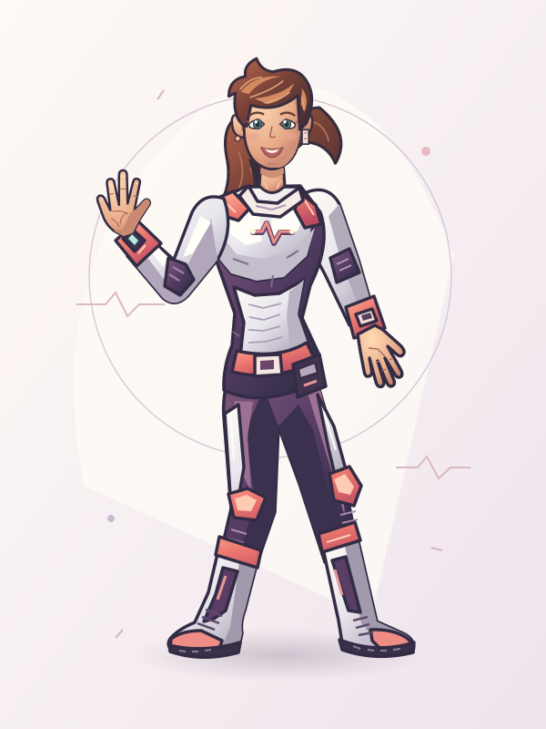
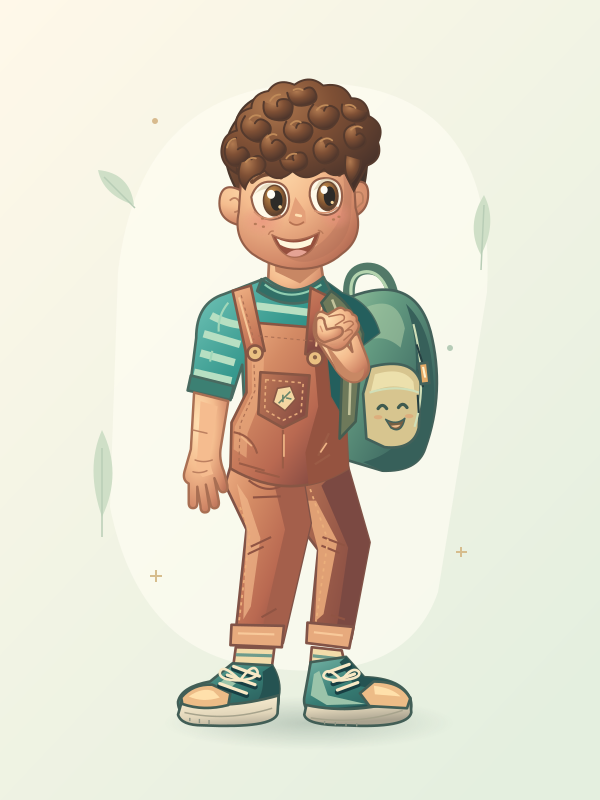
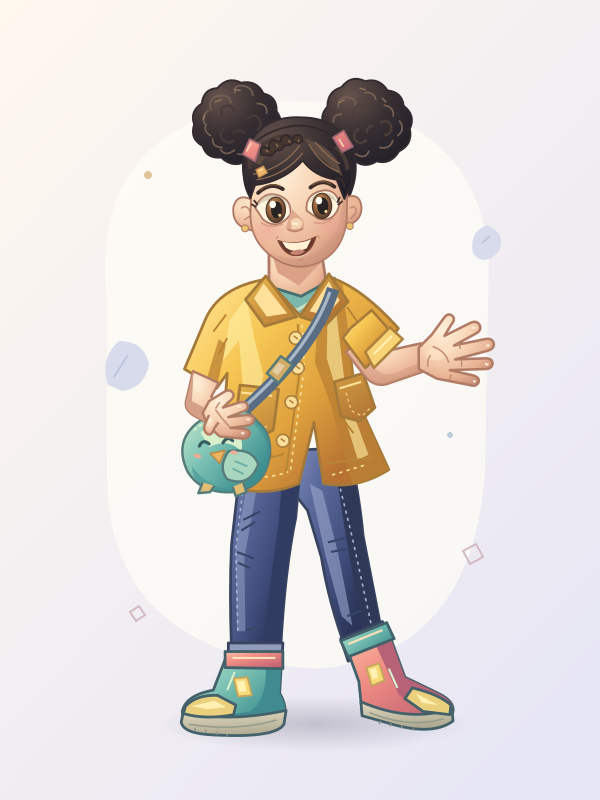
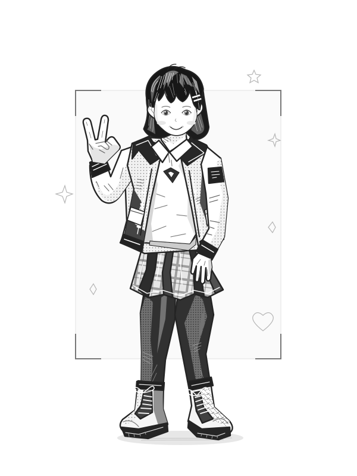
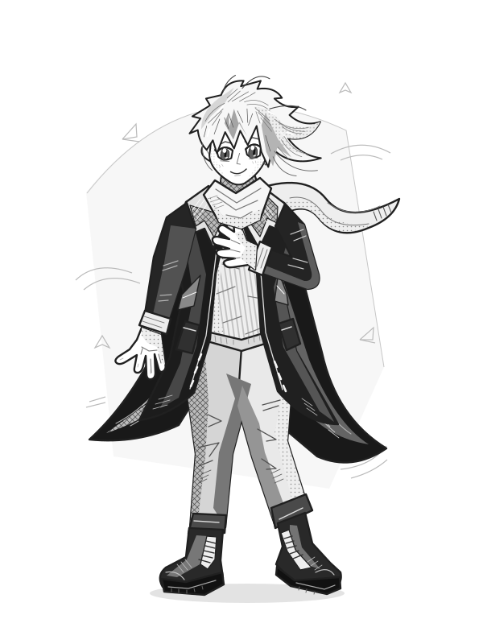

01 / ANIME
קאיט
KITE · STREET EXPLORER
כיוון עירוני: שיער מעוצב, לבוש בשכבות ופרטי תפרים. הצללות חדות ועיניים מודגשות מחליפות את מראה הבובה הפשוט.
פתיחה בגודל מלא ↗שמונה הצעות מקוריות בהשראת הכיוונים החזותיים ששלחתם: שתי דמויות אנימה, שני גיבורי־על, שתי דמויות מצוירות ושתי דמויות מנגה בשחור ולבן.
אלו הצעות איור לבדיקה, לא החלפה של הדמויות במשחק. העיצוב, המבנה וכללי המשחק שאהבתם נשארים ללא שינוי. לאחר בחירת כיוון יהיה צורך להתאים את האיורים לשכבות הגוף והלבוש הנפרדות.
האיורים נוצרו בקוד וקטורי מקורי. ההצללות בדמויות המצוירות מציעות תחושת נפח, אך אינן הדמיה תלת־ממדית. תמונות ההשראה לא הועתקו ולא נכללות בגלריה. קטגוריית החיות נשארה ללא שינוי.
לכל דמות אוסף של עשרה אביזרים. בביקור הראשון נבחרים חמישה באקראי; לחצו על ״ערבוב אביזרים״ לבחירה חדשה. אפשר להציג ולהסתיר כל אביזר בנפרד, ואביזרים שמתחרים על אותו מקום אינם נבחרים יחד. הבחירות ומצב ההצגה נשמרים אוטומטית בדפדפן זה וחוזרים בפתיחה הבאה. לחיצה על האיור מגדילה את הבחירה הנוכחית. הלבוש המקורי נשאר קבוע.
מוצגות 8 דמויות בארבעה סגנונות.

KITE · STREET EXPLORER
כיוון עירוני: שיער מעוצב, לבוש בשכבות ופרטי תפרים. הצללות חדות ועיניים מודגשות מחליפות את מראה הבובה הפשוט.
פתיחה בגודל מלא ↗
EMBER · SKY COURIER
כיוון הרפתקה: תלבושת מסע, שיער זורם ובד בתנועה. צללית אחרת, עם יותר קפלים ואופי באיור.
פתיחה בגודל מלא ↗
BEACON · LIGHT GUARDIAN
כיוון קומיקס קלאסי: מבנה אתלטי גבוה יותר, גלימה, קווי מתאר מודגשים וחלוקת אור וצל על התלבושת.
פתיחה בגודל מלא ↗
PULSE · RESCUE PILOT
גיבורת חילוץ עם תלבושת טכנית ומחווה ידידותית. הראש הוגדל וכף היד המורמת הוקטנה לפרופורציות מאוזנות יותר.
פתיחה בגודל מלא ↗
MILO · LITTLE EXPLORER
ראש קטן ומאוזן יותר, תלתלים בולטים וחיוך רחב. כפות הידיים צוירו מחדש: אחת נינוחה לצד הגוף והשנייה אוחזת ברצועת התיק.
פתיחה בגודל מלא ↗
TALI · SUNNY TRAVELLER
כיוון צבעוני ושמח עם גוון עור בהיר. הרגליים צוירו מחדש בעמידה נינוחה ויציבה, בלי הפיתול הקודם בברך.
פתיחה בגודל מלא ↗
SORA · EVERYDAY STORIES
עיניים קטנות בצורת שקד, קווים עדינים ומבט רגוע. פנים רכות וחיוך קטן וסגור, לצד מרקמי הדיו בבגדים.
פתיחה בגודל מלא ↗
REN · WIND WALKER
כיוון הרפתקה גרפי: מעיל ארוך, צעיף בתנועה וניגוד חזק בין שטחים כהים לקווי שיער בהירים.
פתיחה בגודל מלא ↗